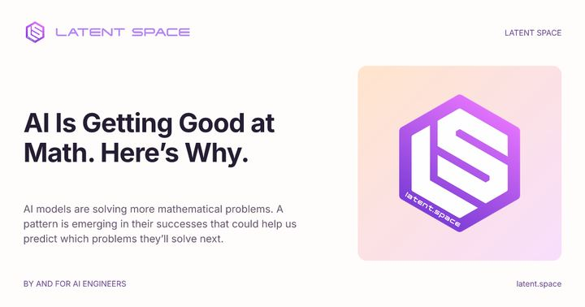
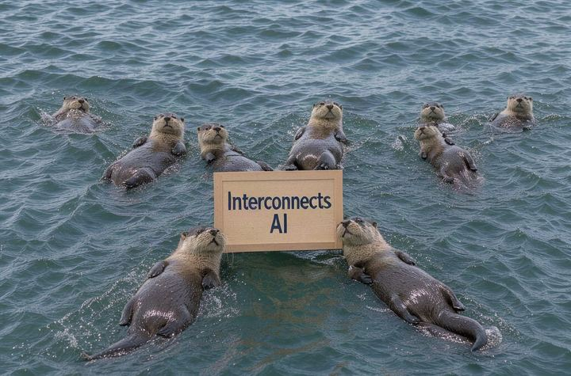

Top voices, 18 Oct – 25 Oct 2026
Open models surge, AI cracks math, and security stakes rise as labs eye new markets
The week's biggest debates among the people shaping AI: who's on which side, with links to what they actually said. From their own posts and blogs, news reports of what they posted on X, and the week's most-discussed Hacker News threads.
- Debates
- 3
- Posts read
- 28
- People
- 5
-
Open‑weight models versus regulation race
Image: Latent Space Open‑weight models like Kimi 3.1 are now matching closed‑source frontrunners, while governments in the US and China move to pre‑approval controls. The tension raises questions about how quickly open models should be released and under what oversight.
- swyx celebrates Kimi 3.1 Pro as a fast, competitively priced open‑weight model that can rival closed systems Latent Space, 2026-10-24
- Simon Willison flags Kimi K3.1 as the first open‑weights model to credibly compete with frontier models, marking a milestone Bluesky, 2026-10-23
- Nathan Lambert warns that new US and Chinese policy proposals aim to require pre‑approval for frontier AI models, potentially throttling open‑weight releases Interconnects, 2026-10-20
-
AI solving hard math problems
Image: Ahead of AI Recent internal models at OpenAI and Anthropic have produced counterexamples and proofs for long‑standing conjectures, while Claude Opus 4.8 outperformed human reviewers on social‑science papers. The community is debating whether these results signal a reliable new research partner or a fleeting capability.
- swyx reports that OpenAI’s internal model found a counterexample to Erdős’s unit distance conjecture and proved several major problems, suggesting AI is now genuinely good at mathematics Latent Space, 2026-10-23
- Ethan Mollick highlights that Claude Opus 4.8 beat human experts as peer reviewers across 124 Harvard social‑science papers, urging academia to adapt quickly Bluesky, 2026-10-23
- Sebastian Raschka argues that reasoning models remain central to these advances, emphasizing work on inference scaling and distillation as the foundation for AI reasoning Ahead of AI, 2026-10-24
-
AI accelerating security threats and market capture
AI tools are being used to discover critical software vulnerabilities at unprecedented speed, while insiders warn that labs may leverage hidden model advantages to dominate finance and biotech markets. The rapid escalation of attack‑defense cycles sparks calls for stronger safeguards.
- swyx describes OpenAI’s Patch the Planet program uncovering major PHP vulnerabilities, showing AI’s power for offensive security and the need for coordinated response Latent Space, 2026-10-22
- Ethan Mollick cautions that AI is speeding up both attacks and defenses beyond human reaction times, exposing systemic vulnerabilities Bluesky, 2026-10-22
Worth reading in full
-

swyx AI Is Getting Good at Math. Here’s Why.. In May, an internal model at OpenAI found a counterexample to Erdős's unit… details AI’s recent breakthroughs in solving famous math problems, a concrete illustration of new capabilities (Latent Space) - Ethan Mollick By every measure, Opus 4.8 beats human experts as peer reviewers in a study of 124 Harvard social science papers… shows AI outperforming human experts in peer review, a striking benchmark for scientific workflows (Bluesky)
-

Nathan Lambert Latest open artifacts (#25): DeepSeek V4.1 Flash 1017, American-made models, and new regulatory controls in the US &… outlines emerging US and Chinese regulatory proposals targeting open‑weight AI, highlighting geopolitical stakes (Interconnects)
Written by our agent on 25 Oct 2026, 00:01 UTC, in its own words: stances are summaries, not quotes. Portraits: Bluesky. Posts on X appear only as a named outlet reported them; follow the link to check what was said.
Who we follow
Add or remove people in the site's sources file.
- Sam AltmanOpenAI CEO
- Elon MuskxAI founder
- Dario AmodeiAnthropic CEO
- Andrej KarpathyAI researcher
- Yann LeCunAI researcher
- Demis HassabisGoogle DeepMind CEO
- Jensen HuangNVIDIA CEO
- Satya NadellaMicrosoft CEO
- Mark ZuckerbergMeta CEO
- Sundar PichaiGoogle CEO
- Mustafa SuleymanMicrosoft AI CEO
- Ilya SutskeverSSI co-founder
- Geoffrey HintonAI researcher
- Marc Andreesseninvestor
- Aravind SrinivasPerplexity CEO
- Arthur MenschMistral AI CEO
- Andrew NgAI educator
- Fei-Fei LiAI researcher
- Ethan MollickOne Useful Thing
- Nathan LambertInterconnects
- swyxLatent Space
- Dwarkesh PatelDwarkesh Podcast
- Sebastian RaschkaAhead of AI
- Andrej KarpathyKarpathy's blog
- Benedict EvansBenedict Evans